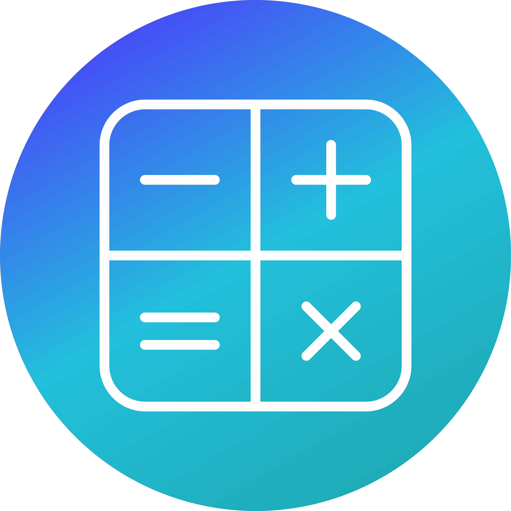

Calculators are portable electronic devices used to perform mathematical calculations, ranging from basic arithmetic to complex functions, and are commonly found in schools, businesses, and everyday life.
Arithmetic Operations: Calculators excel at performing addition, subtraction, multiplication, and division.
Calculator, machine for automatically performing arithmetical operations and certain mathematical functions. Modern calculators are descendants of a digital arithmetic machine devised by Blaise Pascal in 1642. Later in the 17th century, Gottfried Wilhelm Leibniz created a more-advanced machine, and, especially in the late 19th century, inventors produced calculating machines that were smaller and smaller and less and less laborious to use. In the early decades of the 20th century, desktop adding machines and other calculating devices were developed. Some were key-driven, others required a rotating drum to enter sums punched into a keyboard, and later the drum was spun by electric motor.
The development of electronic data-processing systems by the mid-1950s began to hint at obsolescence for mechanical calculators, and the developments of miniature solid-state electronic devices ushered in new calculators for pocket or desk top that, by the late 20th century, could perform simple mathematical functions (e.g., normal and inverse trigonometric functions) in addition to basic arithmetical operations; could store data and instructions in memory registers, providing programming capabilities similar to those of small computers; and could operate many times faster than their mechanical predecessors. Various sophisticated calculators of this type were designed to employ interchangeable preprogrammed software modules capable of 5,000 or more program steps. Some desktop and pocket models were equipped to print their output on a roll of paper; others even had plotting and alphabetic character printing capabilities.
"This calculator website is a lifesaver! The interface is simple, and the results are super accurate. I use it daily for my financial and mathematical calculations!" — Rahul S.
Go to Calculator"As a student, I rely on this site for all my math-related tasks. The step-by-step solutions are a huge plus!" — Anu K.
Go to Calculator